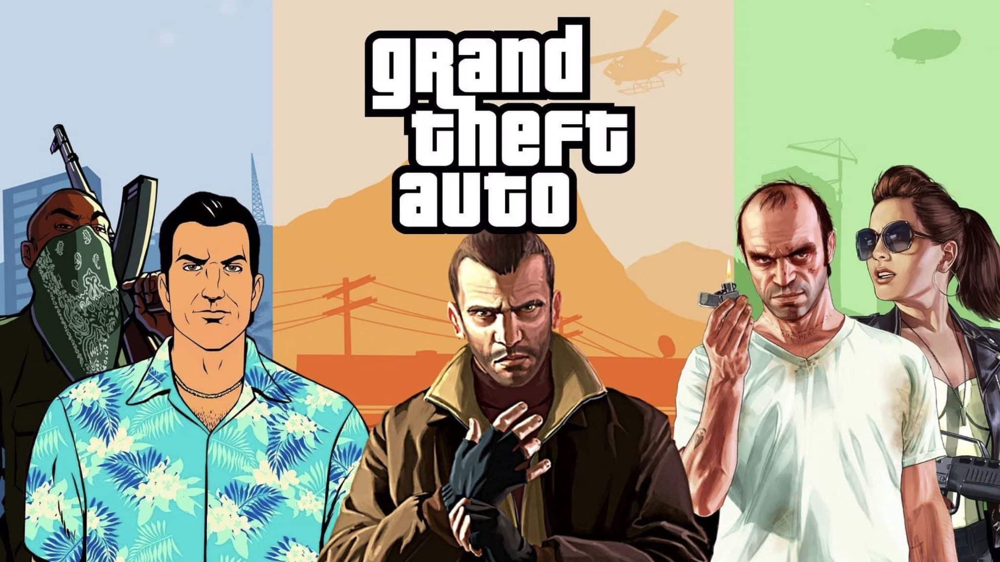

🚔 Grand Theft Auto (GTA)

Género: Acción-Aventura / Mundo abierto
Desarrolladora: Rockstar Games (originalmente DMA Design)
Primer lanzamiento: 1997 (Grand Theft Auto)
Plataformas: PC, PlayStation, Xbox, Nintendo Switch, móviles
Ventas totales de la serie: Más de 440 millones de copias
Recaudación de GTA V: Más de $8,000 millones de dólares
📖 ¿Qué es Grand Theft Auto?
Grand Theft Auto (GTA) es una de las franquicias de videojuegos más importantes y controvertidas de la historia. Desarrollada por Rockstar Games, la serie se caracteriza por ofrecer mundos abiertos masivos donde el jugador asume el rol de un criminal que puede explorar libremente la ciudad, realizar misiones, robar vehículos, y participar en todo tipo de actividades ilícitas.
Lo que comenzó en 1997 como un juego con gráficos en 2D y vista cenital se transformó en un fenómeno cultural global que ha vendido casi 500 millones de copias en todo el mundo. La saga es conocida por su sátira social, su violencia explícita, y su capacidad para ofrecer una libertad sin precedentes dentro de un videojuego.
🎮 La evolución de la saga
📟 Era 2D (1997-1999)
- Grand Theft Auto (1997): El juego que inició todo. Con vista cenital y un mundo abierto dividido en tres ciudades ficticias (Liberty City, Vice City y San Andreas), los jugadores podían elegir entre varios personajes y completar misiones delictivas. El protagonista podía ser hombre o mujer, con opciones como Travis, Katie, Divine, Bubba, Troy, Kivlov y Ulrika.
- Grand Theft Auto: London 1969 y London 1961 (1999): Expansiones ambientadas en el Londres de los años 60.
- Grand Theft Auto 2 (1999): Conservó la vista cenital pero introdujo una ciudad retrofuturista llamada Anywhere City y el icónico sistema de estrellas para medir la atención policial.
🎲 Era 3D (2001-2009) - La revolución del mundo abierto
- Grand Theft Auto III (2001): El primer juego de la saga en presentar gráficos tridimensionales. Revolucionó la industria al ofrecer un mundo abierto completamente interactivo, algo que ningún otro juego había logrado hasta entonces. Protagonizado por Claude Speed, un criminal silencioso que busca venganza tras ser traicionado por su novia Catalina.
- Grand Theft Auto: Vice City (2002): Ambientado en 1986 en una ciudad inspirada en Miami. Protagonizado por Tommy Vercetti, un exconvicto con camisa hawaiana que asciende en el mundo del narcotráfico. Inspirado en Tony Montana de Scarface.
- Grand Theft Auto: San Andreas (2004): Considerado por muchos como el mejor juego de la saga. Ambientado en 1992 en el estado ficticio de San Andreas (inspirado en California y Nevada). Protagonizado por Carl "CJ" Johnson, quien regresa a Los Santos tras el asesinato de su madre. Introdujo elementos RPG como la personalización del cuerpo, el corte de pelo, los tatuajes y la capacidad de nadar.
- Grand Theft Auto: Vice City Stories (2006): Precuela de Vice City, ambientada en 1984. Protagonizada por Victor Vance, el hermano de Lance Vance.
- Grand Theft Auto: Liberty City Stories (2005): Precuela de GTA III, ambientada en 1998. Protagonizada por Toni Cipriani.
- Grand Theft Auto: Chinatown Wars (2009): Exclusivo para Nintendo DS y PSP, con gráficos en sombreado de celdas y vista isométrica. Protagonizado por Huang Lee.
🌆 Era HD (2008-actualidad)
- Grand Theft Auto IV (2008): Reinició la saga con un nuevo motor gráfico y un tono más realista. Ambientado en Liberty City (inspirada en Nueva York). Protagonizado por Niko Bellic, un inmigrante de Europa del Este que busca el "sueño americano". Incluye dos expansiones: The Lost and Damned (protagonizada por Johnny Klebitz) y The Ballad of Gay Tony (protagonizada por Luis Fernando López).
- Grand Theft Auto V (2013): El juego más exitoso de la franquicia. Ambientado en Los Santos y sus alrededores (inspirados en Los Ángeles). Introduce por primera vez tres protagonistas intercambiables: Michael de Santa (ladrón retirado bajo protección de testigos), Trevor Philips (un violento psicópata) y Franklin Clinton (un joven pandillero que busca algo mejor).
- Grand Theft Auto Online (2013): El modo multijugador de GTA V, que permite a los jugadores crear su propio personaje y vivir historias en el mismo mundo. Sigue recibiendo actualizaciones más de una década después de su lanzamiento.
👥 Los protagonistas más icónicos
🎭 Era 3D
- Tommy Vercetti (Vice City): Un exconvicto que se convierte en el rey del narcotráfico en Vice City. Su camisa hawaiana y su actitud despiadada lo hicieron legendario.
- Carl "CJ" Johnson (San Andreas): Probablemente el protagonista más famoso de la saga. Su historia de venganza y ascenso desde los barrios bajos de Los Santos hasta la cima del crimen organizado conquistó a toda una generación. Su famoso "Ah, shit! Here we go again" es inolvidable.
- Claude Speed (GTA III): El protagonista silencioso. Un criminal frío y calculador que no dice una sola palabra durante todo el juego.
- Victor "Vic" Vance (Vice City Stories): El hermano de Lance Vance. Un soldado que termina envuelto en el mundo del crimen para poder mantener a su familia.
- Toni Cipriani (Liberty City Stories): Un matón de la mafia que trabaja para Salvatore Leone. Aparece también como personaje secundario en GTA III.
🆕 Era HD
- Niko Bellic (GTA IV): Un inmigrante yugoslavo que busca el "sueño americano" pero se ve arrastrado al mundo del crimen. Es conocido por su humor negro, su lealtad a su familia, y por ser un personaje profundamente trágico.
- Michael de Santa (GTA V): Un ladrón de bancos retirado que vive bajo el programa de protección de testigos. Es inteligente, manipulador y está atrapado en una crisis de mediana edad. Su habilidad especial es una especie de "bullet time".
- Trevor Philips (GTA V): Un antiguo piloto militar que vive enganchado a las drogas. Es violento, impredecible y psicópata. Es uno de los personajes más queridos y odiados de la saga.
- Franklin Clinton (GTA V): Un joven pandillero de Los Santos que busca algo mejor que trabajar para el "chino del barrio". Es el más sensato de los tres protagonistas.
- Johnny Klebitz (The Lost and Damned): El líder de la banda de moteros The Lost. Un personaje trágico cuyo destino es revelado en GTA V.
- Luis Fernando López (The Ballad of Gay Tony): Un guardaespaldas del famoso Tony Prince. Se ve envuelto en situaciones cada vez más peligrosas mientras intenta mantener a salvo a su jefe.
🎮 ¿Por qué GTA es tan popular?
Especialistas en psicología sugieren que el éxito de GTA reside en su capacidad de ofrecer una experiencia de escapismo, permitiendo que los jugadores exploren comportamientos y situaciones que serían inaceptables en la vida real. La libertad para tomar decisiones morales cuestionables en un entorno virtual proporciona una catarsis, donde los jugadores pueden experimentar emociones intensas sin consecuencias reales.
Además, Rockstar ha sabido evolucionar la jugabilidad con cada entrega. La personalización de personajes, vehículos y propiedades, la gran variedad de actividades secundarias (desde tenis y golf hasta carreras callejeras y paracaidismo), y las historias complejas con personajes bien desarrollados mantienen a los jugadores enganchados por cientos de horas.
🎬 GTA y la cultura popular
La serie ha tenido un impacto cultural enorme. Ha contado con actuaciones de actores de Hollywood como Ray Liotta (Tommy Vercetti), Samuel L. Jackson (Oficial Tenpenny), Michael Madsen (Toni Cipriani), y hasta músicos como Phil Collins apareciendo como ellos mismos.
Las estaciones de radio de GTA se convirtieron en artefactos culturales por derecho propio, introduciendo a millones de jugadores a nuevos géneros musicales y renovando el interés en canciones clásicas. La sátira de la cultura estadounidense presente en los juegos ha sido analizada en universidades como una lente para comprender problemas sociales contemporáneos.
💰 Récords de la franquicia
- GTA V generó $800 millones en sus primeras 24 horas, vendiendo más de 13 millones de copias el día de su lanzamiento.
- Ha vendido más de 210 millones de copias en todo el mundo (contando todas las plataformas).
- Ha generado más de $8,000 millones en ingresos, convirtiéndolo en uno de los productos de entretenimiento más rentables de la historia, superando a cualquier película o álbum musical.
- La franquicia entera supera los 440 millones de copias vendidas.
- GTA Online sigue activo más de una década después, con actualizaciones regulares y millones de jugadores activos cada mes.
🎮 El polémico sistema de estrellas
Una de las mecánicas más icónicas de la saga es el sistema de "nivel de búsqueda" representado por estrellas. Cuantas más estrellas tienes, más intensa es la respuesta policial:
- ⭐ 1 estrella: Un patrullero te persigue.
- ⭐⭐ 2 estrellas: Múltiples patrulleros y los oficiales disparan a matar.
- ⭐⭐⭐ 3 estrellas: Helicópteros policiales y unidades de respuesta táctica.
- ⭐⭐⭐⭐ 4 estrellas: Equipos SWAT con rifles de asalto.
- ⭐⭐⭐⭐⭐ 5 estrellas: Agentes del FBI (FIB en el juego) y vehículos todoterreno.
- ⭐⭐⭐⭐⭐⭐ 6 estrellas: Militares con tanques y vehículos blindados (en entregas clásicas).
🔜 ¿Qué sigue? - GTA VI
Grand Theft Auto VI es el juego más esperado de la historia. Se espera que salga a la venta el 19 de Noviembre de 2026, aunque ha sufrido múltiples retrasos. Las filtraciones y el trailer oficial han confirmado que:
- El juego regresará a Vice City (la versión de Rockstar de Miami).
- La historia estará inspirada en Bonnie y Clyde, con dos protagonistas: Jason y Lucía (Lucía será la primera protagonista mujer de la era HD).
- Se espera que el juego genere más de $3 mil millones en su primer año, con más de $1 mil millones solo en preventas.
- Las patentes de Rockstar sugieren una IA avanzada con miles de NPCs moviéndose dinámicamente, simulaciones de multitudes nunca antes vistas, y tecnología de animación de última generación.
Analistas predicen que GTA VI podría lanzarse con un precio de $80 o incluso $100, lo que podría cambiar los estándares de precios en toda la industria.
⭐ Puntuación de la serie
GTA es una de las franquicias mejor valoradas de la historia. GTA IV y GTA V tienen puntuaciones de 98 y 97 en Metacritic respectivamente, y San Andreas es considerado por muchos el mejor juego de la era de PlayStation 2.
Puntuación general: ⭐⭐⭐⭐⭐ (5/5 - Una de las sagas más importantes de la historia de los videojuegos)
← Volver a la lista de juegos